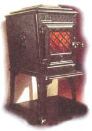

WOOD STOVE UPDATE
An Interview with Dan Melcon, industry gadfly and fellow alarmist.
The American market for wood heat is dwindling, and this emergency reserve of fuel-so entwined with the spirit of individualism and independence-is being elbowed to the sidelines by a glut of oil and natural gas. It seems that the same collective amnesia that allows us to build gargantuan sport utility vehicles has made us forget that a wood stove is one of the last practical defenses against another energy crisis. After we attended the convention of wood, gas, and pellet stove manufacturers in St. Louis, I discussed this situation with Dan Melcon, who has made a career of monitoring the "hearth products" industry.
-Matt Scanlon
MOTHER: One look at the most current trade show in St. Louis is enough to convince a prospective wood stove buyer that the industry is in a real transition. The place was full of multi-thousand dollar gas and pellet stoves ... combination fishtanks and radiant beaters. But I saw virtually no actual wood-burning stoves. My first question to you is: Why has the wood stove seemingly disappeared from the wood stove industry?
Dan Melcon: [Laughs] It's true, but I haven't heard anyone ask me that question in a long while. I did an article a while back entitled "Whither the Wood Stove?" so I can appreciate what you are referring to. I think that the wood stove has largely disappeared from the wood stove industry because of declining energy prices for one, the mentality that wood stove heat is a hassle, the perception that wood heat is an environmental "bad guy," and finally, simple demographics.
MOTHER: So as oil prices plummet, wood beat seems less of a bargain?
D.M.: It seems that way, but wood heat is still one of your least expensive forms of home heating. The variable is how you account for your own labor. Throwing logs into a stove is, to some degree, labor intensive. So it depends upon how you value that. But in terms of cost per million BTUs, wood, along with natural gas, is still one of the best buys. Gone, however, are the days when your oil bill exceeded your house payment. Oil is selling for well under a dollar a gallon, about 50% less than in the heyday of wood stove enthusiasm.
MOTHER: It's hard for me to swallow that Americans are gladly disposing of a bargain for the sake of sheer convenience ... I mean, the practicality of wood beat is still only an oil-crisis away.
DM.: Wood heat is regarded by a lot of people as work, and work that they don't have to do now. It might be because their own economic situation is better or it might be because the cost of the other energy options is a lot less expensive than it had been. And also, as a society, we have gotten away from some of the core values of [ MOTHER'S ] readership: being selfsufficient and harboring our natural resources and using them wisely. Whether you look at the incredibly wasteful sport utility vehicles or at the ostentatious square footage of new housing, we're not nearly as concerned about living on a small planet anymore. Part of that care should be heating with wood.
MOTHER: To be fair, the government has played an indispensable role in the demise of the wood stove. Now you have to be a combustion physicist to go into business.
D.M.: The government was the trigger point for it. In the 70s and early '80s, when you were heating with wood, you were one of the good guys. You were getting local energy and it was renewable. It was taking petrodollars out of the pockets of the OPEC countries. Whereas now, the perception is that wood stoves are a duty form of energy. One of the most frustrating things from my point of view is that the appliances that are available now are so much better than the ones that the vast majority of people experienced. When people ask me what I do, my short answer is that I'm in the "wood. stove business." A lot of people's response is, "I thought that wood stoves were outlawed." Yes, the EPA is regulating them, and other than automobiles, it's the only consumer product the EPA regulates. The perception again was that the government had to step in because the old stoves were a major pollution problem. There were problems, especially in the West, where I lived. But the problems were as much of maintenance and operation as they were problems of poor design. In the past ten to 15 years, the industry has really made quantum leaps in stove design and in reducing emissions ... getting corresponding increases in efficiency. When people talk about wood stoves, they think of all those Model T's that are in the field that were built in the 70s and '80s.
MOTHER: Until the EPA began to intervene in the late '80s.
D.M.: Right. The EPA certification process has been in place for ten years now. July 1, 1988, is when it first officially kicked in and everything manufactured since then has had to be certified as clean burning. I'd say about a million stoves were made in the ten year period since then. But in the late 70s and early '80s, there were about two and a half million stoves being sold per year and the government estimates that there are roughly 15 million existing wood stoves out there. The analogy I use is that it's as if people were continuing to use computers from the early 1980s. The improvements are there, whether it's bum time or reduced clearance to combustibles, cleaner glass or lower emissions. I think that if everybody had a certified stove instead of an older unit, they would use them a lot more because they're a lot more user-friendly in terms of fire control now.
MOTHER: Do you really attribute the fact that they're holding onto their old stoves to relative ignorance, or do the old stoves simply accomplish what people need them to do? My argument against your computer analogy is that a new computer is capable of doing five or six times as much work as an early '80s model, whereas a wood stove basically accomplishes its mission regardless of design. Nothing in my review of the new stoves suggests that they are that different.
D.M.: They're radically different in how much cleaner burning they are. But from a consumer's standpoint, they both heat the house. And whether you use two cords of wood or two and half cords of wood a year, it's not sufficient incentive to go out and make the investment to upgrade. All the stoves in this country are being used far less than they had been anyway, in terms of the consumption of total cords of wood per year. Consumption of cordwood has been declining for years. People like stoves, they leave them in, they want them for backup, certainly. The ice storms across northern New England and in southern Canada this year reacquainted people with some of their benefits. But to a large degree they leave them in the comer and turn up the thermostat.
MOTHER: What would a low-end stove installation run a consumer .. say a low-end stove capable of beating a 1500 square foot house?
D.M.: For an installed package-that is the stove, the hearth pad the stove sits on, wall protection if it is needed, chimney installation-you're going to be between $1,600 and $1,800 for an installed, certified, clean burning, cordwood burning conventional stove, on die low end. That could run all the way up to $3,000 for a nicer cast-iron enamel stove with whistles and bells. The certification costs are one large part of why such a basically simple appliance is so expensive. For instance, almost all the stoves on the market now have dear ceramic Wass to allow viewing of the fire. And yet this material, because it's shatterproof, is expensive. When I used to work at Omni Environmental Services test lab, part of the safety test included heating the glass to 1400°F, then squirting cold water on it and smacking it with a two-inch steel ball swung on a 16-inch pendulum. It's very expensive stuff, testing. All these improvements incorporated as standard features in the stoves have caused the price to increase as well.
MOTHER: When we are figuring the low cost of wood .. is that taking into consideration the up-front installation costs?
D.M.: You amortize the total cost-$1,600 to $1,800 on the low end-along with the cost of the fuel itself. It's assuming you're purchasing cordwood at about $100 a cord. it does take into account the cost of the equipment.
MOTHER: A furnace costs a lot more than that. But I was shocked to find that the least expensive wood stove I saw costs about a thousand bucks. I wondered what the world was coming to.
D.M.: Just going through some of the companies in my mind, Travis Industries' Lopi "The Patriot" will heat 1,000 to 1,500 square feet. When you buy it stripped down, without the fan, without the convection chamber, without the gold door, it's list price is just under $750. it's a good value.
MOTHER: But that's not representative of the standard low end.
D.M.: Of the stoves that are sold out there, maybe 20% are under $1,000, maybe 60% are about $1,500, and maybe 20% are $1,500 and up for the stove itself.
MOTHER: Are there any other manufacturers at the low end that offer good value?
D.M.: Jotul of Norway is the largest manufacturer of wood stoves in the world. They make a cast-iron stove called the 602. This design predates WWII. They modified one of these models so it passes the EPA standards. it's a small unit; it's more a zone heater for a room. It's not a whole house heater, but it retails for about $600. Waterford Stoves out of Ireland has a nice real low-end box cast-iron stove [the 104 MKII, see following page for photo] that also is in the $600 price range. There are some stoves designed to go to mass merchants and home centers. There's a company out of Virginia called Englander that makes some. There is a company that's a subsidiary of Jacuzzi up in Ontario called Century Heating Products that makes some low-end stuff ... and there are other good values to be had, you've just got to scour those dealers. John Gulland instituted a great Web site for a potential buyer that I refer to often ( http://www.gulland.ca/ ).
MOTHER: Do you think the industry has any regrets about leaving behind the pioneering spirit of wood beat? Do they feel that they've inherited an unfortunate situation from the government that they're making the best of? Maybe they're just making good money right now and that's the end of it.
D.M.: No, a lot of people in the industry are very uneasy about where we are headed. They feel like we have in fact left our roots and abandoned the core philosophy that brought people into the business in the first place. Many are not comfortable with it at all.
MOTHER: Trade shows are always exercises in splendor, but that opening presentation of an enormous gas stove with a waterfall running over it struck me as a perfect metaphor for what is wrong with the beating business right now.
D.M.: Right. It's like: "What the hell is all this about?" To be honest, that's my reaction: Is this appropriate? Do we need this? Is this what we have been about historically? The answer in my mind, obviously, is no, but the reality is that the industry is changing, and it is changing to reflect consumer choices and consumer demand.
MOTHER: Are there more manufacturers now than there were five years ago?
D.M.: The number of wood and pellet stove manufacturers continues to decline. During the energy crisis, around 1979, there were about 2,000 manufacturers that had listed products. By the time the EPA regulations kicked in about ten years ago, the number had dropped to about 500. That was natural attrition. The market declined; people that did not build good units, or were not good business people, or who could not adapt to improvements in aesthetics got squished. The next big squeeze was with the EPA rule. To mitigate it, they had temporary exemptions for small manufacturers of less than 2,000 stoves. There are now about 60 manufacturers that make certified wood stoves, but only 20 really do any volume and make more than 1,000 stoves. I'd say 20 companies make less than 1,000 stoves, 20 make less than 500, and 20 make more than 1,000.
MOTHER: The majority of the time, it seems that new stoves are purchased as a decorative adjunct to an existing beating system. These are not primary systems anymore.
D.M.: I think it's fair to say that almost no one is buying a hearth product because they have to. In the '70s, with those tremendous oil bills ... you had to do something about it. Now that's not the case. They're making the choice for aesthetic, ambiance, lifestyle reasons. One thing that has never been lost is the universal appeal of the fire. I always say that watching burning fire and falling water are two things that intrigue and entrance people. That appeal is always there, but now it's a matter of choice, not necessity.
MOTHER: It will shock MOTHER readers to bear that people are not buying wood stoves because they need them anymore but because they look pretty.
D.M.: A perfect example of your statement is that currently there are 500,000 sets of vented gas logs sold every year, which pour 50,000 to 100,000 BTUs per hour straight up the chimney. It's incredible. I'm in rural Vermont, where there is no access to natural gas. When the oil companies say we can sell you a gallon for 70 cents and 20 years ago it was $1.20, you heat with what works best and most simply. Nobody's buying because they have to. It's because they want a fire in their home.
MOTHER: This explains why an overwhelming number of pellet stoves-and some of the gas stoves-actually require electricity to run.
D.M.: Right. All pellet stoves require electricity. There are backup systems available, but if you're using a pellet stove, you're on the grid.
MOTHER: And you're cold without it.
D.M.: You can run them off of 12V batteries. There are backup units, but again, they are for relatively short periods of time. Most power outages are for relatively short periods of time. But that's not always the case...
MOTHER: Absolutely.. This winter we were reminded in the north country that a single ice storm can chase you out of your house and into a Red Cross shelter in a couple of days in the absence of a backup beating system. Did the storm change the industry 's attitude about wood beat? Has it influenced sales?
D.M.: Most gas appliances don't need electricity to operate, so if you had a gas or wood stove, you were probably in good shape ... but yes ... I think the ice storm was a wake-up call to the industry to get back to its roots. All of a sudden our products were something that people needed, that they depended upon in order to stay in their homes.
MOTHER: Are there any governmental regulations this year that affect the wood burner?
D.M.: At this point, no. The EPA standards of ten years ago have proven effective in cleaning up the emissions from individual stoves. The problem of pollution from wood has largely gone away because of the wholesale decline in the use of wood heat anyway. Some of the worst problems with wood heat were in Oregon. I worked really hard with the Oregon Department of Environmental Quality that came up with the first standards and which essentially became the EPA standards. And so the problem essentially went away. At this point, there are no significant changes on the horizon. I pay lots of attention to regulations, and there are no red flags out there.
MOTHER: Where is the industry beaded? Do you forecast still fewer wood stoves being produced;, more gas stoves?
D.M.: Wood stove sales declined from 1981 until 1996 or 1997; there was a little spike during the Gulf war, with a crisis mentality and rising oil prices, but it seems to have leveled out. Pellet stoves came on strong with lots of appeal. Then people found out that a lot of the primary benefits that pellet stoves offer-convenience and efficiency-are there in spades with gas. A lot of the potential pellet market converted to gas. Pellet stoves went way up, then declined. Wood and pellet stove sales seem to have leveled out. There will always be a market for them. There will always be people like myself who like burning wood, who like the ritual of making a fire, who like the unique penetrating warmth that comes from the radiant heat of a stove relative to heated air. That market will always be there, and it seems to have stabilized. My suspicion is that it is going to come down to a slight degree. Here is where I'll get politically incorrect again. Watching a real wood fire is mesmerizing: it's changing, it's alive, it's happening all the time. Watching a pellet fire is much less appealing. You have a combustion fan that is blowing into the firepot. As much as the gas industry feels that a gas fire can mimic a wood fire, it's not the same. I'm hopeful that wood will rise again.
MOTHER: It does get pretty hysterical watching the industry chasing its tail and inventing whirring aluminum flakes that simulate the undulation of flame in a gas stove.
D.M.: The question is, "Why are you guys working so hard to create a fake fire when a real fire is available?" I think the answer to that over time will be a shift back to wood. But there are still issues that need to be resolved about fuel. Gas is a no-brainer as a fuel: it's piped to your house. Pellet distribution is not a factor in general. You go to the store, you buy a ton of them or you have them delivered, and you pour them in the stove.
MOTHER: And much of what constitutes pelletfuel is wastepaper and waste wood that would otherwise be disposed of.
D.M.: It's a waste by-product that would otherwise end up in land disposals or something like that, yes. Whereas with wood you either have to get it yourself or you have to buy it. The old guy with his chain saw and pickup truck has largely disappeared from the scene as the economy has gotten better and the demand for cordwood has declined.
MOTHER: Well, we're not planning on selling the pickup and chain saw just yet.
D.M.: [Laughs], Yeah, I'll hitch a ride during the next energy crisis.
|
It's steep at $1,649, but Waterford's Ashley will heat 11,500 sq. ft. |
Jotul's 602 heats 800 sq. ft. and retails for $600. |
The Waterford 104 MK II will heat 750 sq. ft. and retails for $595. |
|
The Jotul 3CB heats 1,300 sq. ft. and retails for $1,100. |
 |
|
|
|
|
|